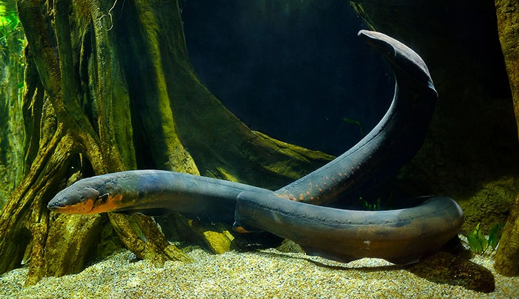

Electric Eel
As the fish grow, they continually add more vertebrae to their spinal column.
The electric eels are a genus, Electrophorus, of neotropical freshwater fish from South America in the family Gymnotidae. They are known for their ability to stun their prey by generating electricity, delivering shocks at up to 860 volts. Their electrical capabilities were first studied in 1775, contributing to the invention of the electric battery in 1800.
Despite their name, electric eels are not closely related to the true eels (Anguilliformes) but are members of the electroreceptive knifefish order Gymnotiformes.

Interactions with Humans
In 1800, the explorer Alexander von Humboldt joined a group of indigenous people who went fishing with horses, some thirty of which they chased into the water. The pounding of the horses' hooves, he noted, drove the fish, up to 5 feet (1.5 m) long out of the mud and prompted them to attack, rising out of the water and using their electricity to shock the horses. He saw two horses stunned by the shocks and then drowned.
In 1839, the chemist Michael Faraday extensively tested the electrical properties of an electric eel imported from Surinam. For a span of four months, he measured the electrical impulses produced by the animal by pressing shaped copper paddles and saddles against the specimen. Through this method, he determined and quantified the direction and magnitude of electric current, and proved that the animal's impulses were electrical by observing sparks and deflections on a galvanometer.